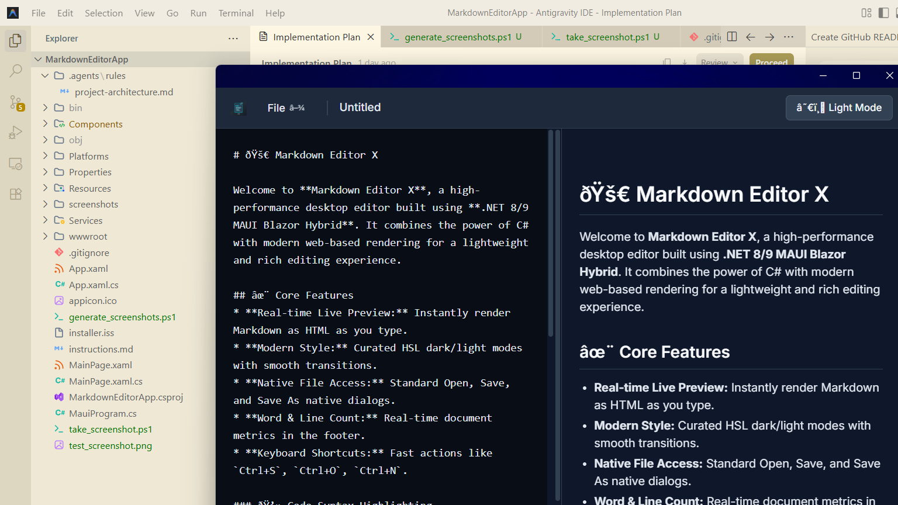
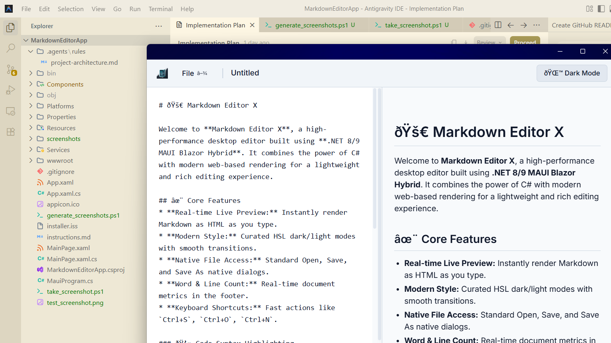

🚀 Markdown Editor X User Guide
Welcome to Markdown Editor X, a lightweight, premium Markdown editor for Windows. This guide will walk you through the key features and interface layout to get you writing instantly.
🖥️ Workspace Layout
The editor uses a distraction-free split-pane interface designed for speed and productivity:
- Editor Pane (Left): Type your Markdown code here. It uses a monospace font designed for legibility and code highlighting.
- Live Preview Pane (Right): Renders your Markdown code to clean, styled HTML instantly as you type.
- Header Menu: Access file management actions on the left, view the active file name, and toggle themes on the right.
- Footer Status Bar: Shows live statistics including line count, word count, and save indicators (Saved / Unsaved Changes).
📁 File Management
Click the File menu in the upper left or use keyboard shortcuts to manage documents:
- New File: Clears the editor to start a new document.
- Open File...: Launches the native Windows file picker to open
.md and .txt files.
- Save: Overwrites the currently active file. If the file is new, it acts as Save As....
- Save As...: Prompts you with the native file dialog to name and place a new file.
- Close File: Closes the current document context and resets the workspace.
- Close Editor: Safely closes the application.
⌨️ Productivity Keyboard Shortcuts
Speed up your workflow using these quick access key combinations:
📸 Application Interface
Below is a visual overview of Markdown Editor X showcasing both themes:

Figure 1: The premium Dark Slate theme (Default) with split-pane view.

Figure 2: The clean Light Mode theme with high-contrast text rendering.